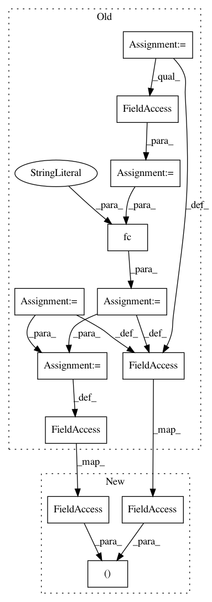

69f25c6028d71e23a7b267b0e1071ad216290f91,baselines/ppo2/policies.py,LnLstmPolicy,__init__,#LnLstmPolicy#Any#Any#Any#Any#Any#Any#Any#,19
Before Change
nenv = nbatch // nsteps
nh, nw, nc = ob_space.shape
ob_shape = (nbatch, nh, nw, nc)
nact = ac_space.n
X = tf.placeholder(tf.uint8, ob_shape) //obs
M = tf.placeholder(tf.float32, [nbatch]) //mask (done t-1)
S = tf.placeholder(tf.float32, [nenv, nlstm*2]) //states
with tf.variable_scope("model", reuse=reuse):
h = nature_cnn(X)
xs = batch_to_seq(h, nenv, nsteps)
ms = batch_to_seq(M, nenv, nsteps)
h5, snew = lnlstm(xs, ms, S, "lstm1", nh=nlstm)
h5 = seq_to_batch(h5)
pi = fc(h5, "pi", nact)
vf = fc(h5, "v", 1)
self.pdtype = make_pdtype(ac_space)
self.pd = self.pdtype.pdfromflat(pi)
v0 = vf[:, 0]
a0 = self.pd.sample()
neglogp0 = self.pd.neglogp(a0)
self.initial_state = np.zeros((nenv, nlstm*2), dtype=np.float32)
def step(ob, state, mask):
return sess.run([a0, v0, snew, neglogp0], {X:ob, S:state, M:mask})
def value(ob, state, mask):
return sess.run(v0, {X:ob, S:state, M:mask})
self.X = X
self.M = M
self.S = S
self.pi = pi
self.vf = vf
self.step = step
self.value = value
After Change
h5, snew = lnlstm(xs, ms, S, "lstm1", nh=nlstm)
h5 = seq_to_batch(h5)
vf = fc(h5, "v", 1)
self.pd, self.pi = self.pdtype.pdfromlatent(h5)
v0 = vf[:, 0]
a0 = self.pd.sample()
In pattern: SUPERPATTERN
Frequency: 6
Non-data size: 12
Instances
Project Name: openai/baselines
Commit Name: 69f25c6028d71e23a7b267b0e1071ad216290f91
Time: 2018-05-01
Author: peterzhokhoff@gmail.com
File Name: baselines/ppo2/policies.py
Class Name: LnLstmPolicy
Method Name: __init__
Project Name: openai/baselines
Commit Name: 69f25c6028d71e23a7b267b0e1071ad216290f91
Time: 2018-05-01
Author: peterzhokhoff@gmail.com
File Name: baselines/a2c/policies.py
Class Name: LstmPolicy
Method Name: __init__
Project Name: openai/baselines
Commit Name: 69f25c6028d71e23a7b267b0e1071ad216290f91
Time: 2018-05-01
Author: peterzhokhoff@gmail.com
File Name: baselines/a2c/policies.py
Class Name: LnLstmPolicy
Method Name: __init__
Project Name: openai/baselines
Commit Name: 69f25c6028d71e23a7b267b0e1071ad216290f91
Time: 2018-05-01
Author: peterzhokhoff@gmail.com
File Name: baselines/a2c/policies.py
Class Name: CnnPolicy
Method Name: __init__
Project Name: openai/baselines
Commit Name: 69f25c6028d71e23a7b267b0e1071ad216290f91
Time: 2018-05-01
Author: peterzhokhoff@gmail.com
File Name: baselines/ppo2/policies.py
Class Name: CnnPolicy
Method Name: __init__
Project Name: openai/baselines
Commit Name: 69f25c6028d71e23a7b267b0e1071ad216290f91
Time: 2018-05-01
Author: peterzhokhoff@gmail.com
File Name: baselines/ppo2/policies.py
Class Name: LstmPolicy
Method Name: __init__